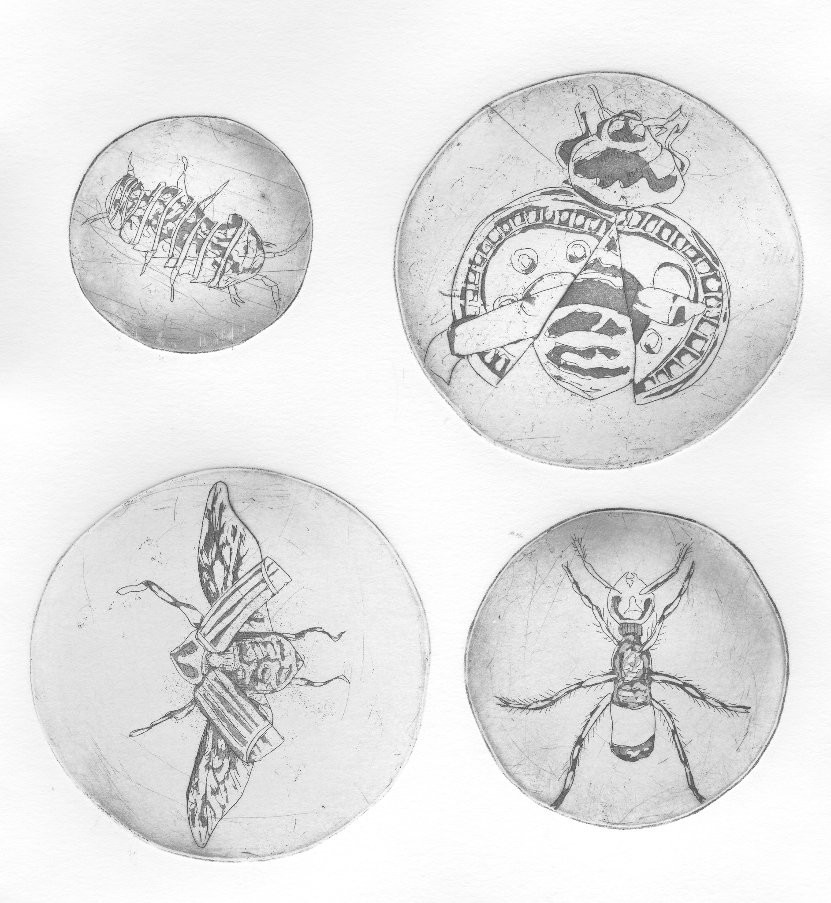
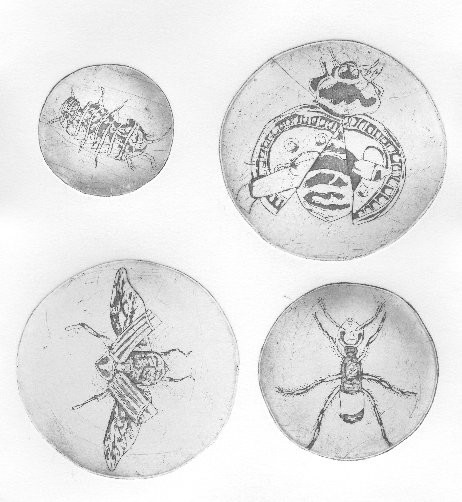

Spécimens du Québec, 2024
L’inspiration m’est venue alors que je marchais après une fonte de neige, au moment où tous les déchets accumulés pendant l’hiver devenaient visibles. En prenant des photos de ces déchets, j’ai trouvé qu'il serait intéressant de remettre en cause la saleté de la ville et de démontrer à quel point les déchets, surtout le plastique, prennent une importance de plus en plus grande dans notre environnement, notre faune et notre flore. C’est pourquoi j’ai pensé à réaliser une série d’une dizaine d’insectes hybridés à des déchets.
Ces insectes hybrides seront créés à la gravure sur cuivre en utilisant les techniques d’aquatinte et de chine collée. Ceux-ci sont insérés dans des boîtes de Pétri rappelant alors l’observation scientifique de nouveaux spécimens.

 
